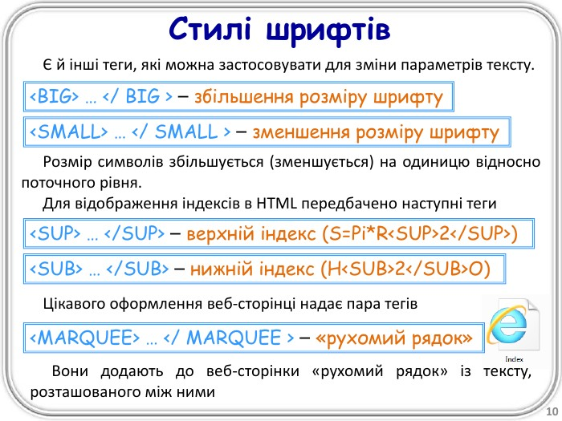

HTML — це мова розмітки, яка використовується для створення веб-сторінок. Вона дозволяє структурувати контент, використовуючи заголовки, параграфи, зображення та багато іншого.
Логотип HTML5
У цьому документі ми навчимося працювати з великими обсягами тексту, використовувати заголовки різних рівнів, вставляти зображення, робити внутрішні посилання та зовнішні посилання.
Розділ 2: Форматування тексту
Для виділення тексту використовуються різні теги. Наприклад, жирний текст робиться за допомогою тегу <strong>. Для курсиву використовується тег <em>. Підкреслення виконує тег <u>, а підсвічування — тег <mark>.

Приклад форматування тексту
Ці теги допомагають зробити текст більш читабельним і виділити важливу інформацію.
Розділ 3: Посилання
У документі можна робити посилання на інші частини сторінки, наприклад на Розділ 1 або на зовнішні ресурси, такі як стаття про CSS у Вікіпедії.
Використання посилань покращує навігацію та зв’язок між різними частинами інформації.